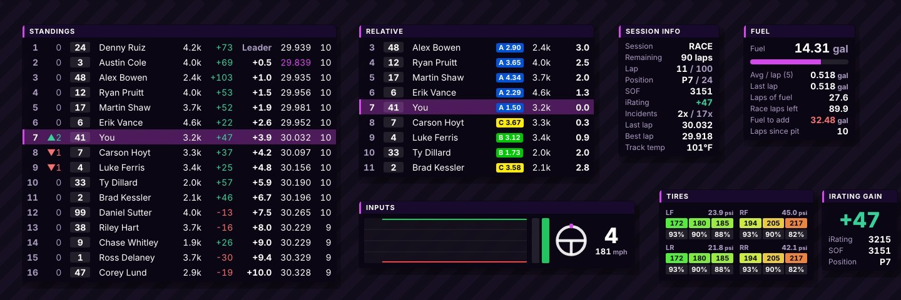
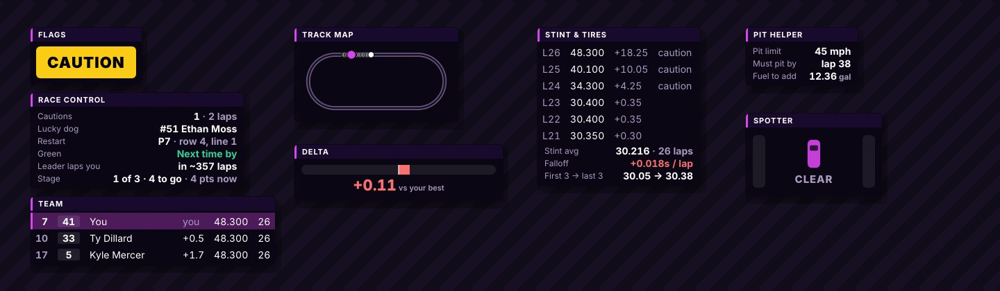

Relative
Cars around you with gaps, iRating, license, and lapped or lapping colors.
40XLI OVERLAYS
Live iRacing widgets for your screen: relative, standings, fuel, inputs, tires and your projected iRating as you run. Every color and every field is yours to set.

WIDGETS
Cars around you with gaps, iRating, license, and lapped or lapping colors.
Full running order with gaps, last and best laps, positions gained, laps since pit and pit stops.
Average and max per lap, laps of fuel left, and exactly how much to add to finish.
Throttle and brake trace, pedal bars, steering wheel, gear, speed and shift light.
Laps or time left, position, SOF, incidents, lap times, delta and track temp.
Pressures, temps and wear for every corner.
Live projected iRating gain or loss from your position and the field. Add it to any widget.
Car left, car right, three wide, and how far alongside. It only pops up when someone's there.
Big caution, green, white, checkered, black flag and meatball alerts, plus incident warnings.
Cautions, lucky dog, free pass and wave-around, your restart spot, stage laps and stage points.
Speed vs the pit limit, limiter check, distance to your box, a pit stop timer and your pit window.
How much to save per lap to make it to the end, and whether last lap was on target.
A live delta bar, and a track map that draws itself after one lap.
Lap-by-lap times for the run and how much your tires are falling off per lap.
Your teammates' running order and gaps, plus rotating sponsor logos for your stream.
BUILT FOR COACHING
Save every lap and lay a student's lap over yours: speed, throttle, brake, steering and the time gap, with a corner-by-corner breakdown.
Watch a driver's inputs, delta and lap times live from another PC, right in a web browser.
A one-page report after every session with lap chart, consistency, fuel, pit stops and incidents. Easy to send.
Optional sound alerts, automatic pit fuel, and layouts you can share or switch for practice and race.

SETUP
01
Run the installer. Windows may say "Windows protected your PC" because it's new. Click More info, then Run anyway.
02
In iRacing's graphics options, use Windowed or Borderless. Overlays can't draw over exclusive fullscreen.
03
Turn on Demo for a practice race, press Ctrl+Shift+L, drag widgets into place and drag the pink corner to resize. Press it again to lock.
04
Widgets show up when you're in the car. Pick the fields and colors for each one in Settings.
40XLI Overlays reads iRacing's telemetry on your own PC and doesn't send your data anywhere. Projected iRating is an estimate. 40XLI is not affiliated with iRacing.com Motorsport Simulations. By installing you agree to the license shown in the installer.